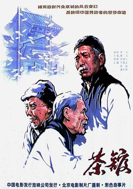

茶馆
又名：The Teahouse
老舍的经典在今天开来依然是一个十分让人感到心痛的故事。很有共鸣，很担心七十多了才悟出人生道理。引用最近超导界常说的话：Are we back? We are so back!
作品信息
| 导演 | 谢添 |
| 编剧 | 老舍 |
| 主演 | 于是之 / 郑榕 / 蓝天野 / 英若诚 / 黄宗洛 / 童超 / 金昭 / 林连昆 / 牛星丽 / 谭宗尧 / 童弟 / 吴淑昆 / 胡宗温 / 程中 / 李大千 / 李源 / 李翔 / 张瞳 / 任宝贤 / 尚丽娟 / 米铁增 / 田春奎 / 冯增祥 / 雷飞 / 林东升 / 孟瑾 / 孙峻峰 / 平原 / 曹世骧 / 王大年 / 王淑华 / 张华 / 丁海涛 / 朱旭 / 孙敬修 / 曹孟浪 / 何康理 |
| 类型 | 剧情 / 历史 |
| 制片国家/地区 | 中国大陆 |
| 语言 | 汉语普通话 |
| 上映日期 | 1982(中国大陆) |
| 片长 | 118分钟 |
| IMDb | tt1395030 |
说过什么
2023-08-12 15:38:06
广播 · 看过 · ★★★★★
老舍的经典在今天开来依然是一个十分让人感到心痛的故事。很有共鸣，很担心七十多了才悟出人生道理。引用最近超导界常说的话：Are we back? We are so back!
2023-08-03 18:22:59
广播 · 想看
最后一次看到是 2026-08-01T11:04:48+10:00 · 豆瓣原页